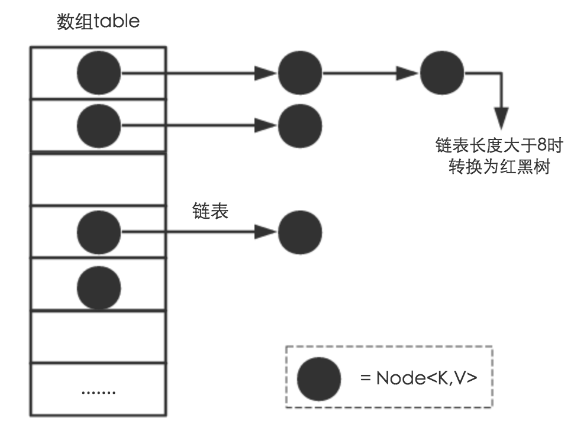

HashMap是Java中KV存储的实现，其如何解决Hash碰撞问题十分经典；
本文从HashMap的概念，结构，参数，性能，线程安全性，源码解析（put,get,resize），使用场景，常见问题8个方面进行分析。
HashMap概念
Hash table based
implementation of the Map interface.
This implementation provides all of the optional map operations, andpermits null values and the null key.> (The HashMap class is roughly equivalent to Hashtable, except that it isunsynchronizedand permits nulls.)
This class makesno guarantees as to the order of the map; in particular, itdoes not guarantee that the order will remain constant over time.
关键点：Map接口的实现、允许null键/值、非同步、不保证有序(比如插入的顺序)、不保证顺序不随时间变化。1
2
3
4
5
6
7
8
9
10
11
12HashMap<String, Integer> map = new HashMap<String, Integer>();
map.put("语文", 1);
map.put("数学", 2);
map.put("英语", 3);
map.put("历史", 4);
map.put("政治", 5);
map.put("地理", 6);
map.put("生物", 7);
map.put("化学", 8);
for(Entry<String, Integer> entry : map.entrySet()) {
System.out.println(entry.getKey() + ": " + entry.getValue());
}
HashMap结构
从结构实现来讲，HashMap是数组+链表+红黑树（JDK1.8增加了红黑树部分）实现的，如下如所示。

HashMap类中有一个非常重要的字段，就是
Node[] table，即哈希桶数组。Node是HashMap的一个内部类，实现了Map.Entry接口，本质是就是一个映射(键值对)。上图中的每个黑色圆点就是一个Node对象。
- 抽象类：AbstractMap
- 接口：Map
实体：EntrySet、KeySet、Node、TreeNode、Values
迭代器
EntryIterator、HashIterator、KeyIterator、ValueIterator分割器
Spliterator、EntrySpliterator、HashMapSpliterator、KeySpliterator、ValueSpliterator
HashMap参数
在HashMap中有2个重要参数， Capacity和Load factor
Capacity（容量）
The capacity is the
number of bucketsin the hash table, The initial capacity is simply the capacity at the time the hash table is created.Capacity就是buckets的数目，默认值为16。
Load factor（负载因子）
The load factor is a measure of how full the hash table is allowed to get before its capacity is automatically increased.
Load factor是buckets填满程度的最大比例，默认值为0.75，当bucket填充的数目（即hashmap中元素的个数）大于$capacity * load factor$时就需要调整buckets的数目为当前的2倍。
HashMap性能
当前实现的HashMap实现提供了constant-time的方法来进行get, put 等基本操作。
- 如果key经过hash算法得出的数组索引位置全部不相同，即Hash算法非常好，那样的话，getKey方法的时间复杂度就是
O(1)， - 如果Hash算法技术的结果碰撞非常多，假如Hash算法极其差，所有的Hash算法结果得出的索引位置一样，那样所有的键值对都集中到一个桶中，或者在一个链表中，或者在一个红黑树中，时间复杂度分别为
O(n)和O(lgn)。
几个要注意的性能点（空间/时间的tradeoff）
- 假如哈希函数能够将元素分散到所有的buckets里。从Collection的角度来说，遍历HashMap需要的时间为
count(buckets)+count(bucket.entrySize)。如果遍历频繁/对迭代性能要求很高，不要把capacity设置过大，也不要把load factor设置过小；load factor更大会减少空间消耗，更小会增加时间消耗（查找更费时）。 - 扩容是一个特别耗性能的操作，如果很多key-values对存储在 HashMap 实例中，给他
初始化一个足够大的capacity，避免map进行频繁的resize扩容。这样更有效率。 - 默认的
load factor=0.75是对空间和时间效率的一个平衡选择，建议不要修改，除非在时间和空间比较特殊的情况下：- 空间换时间：如果内存空间很多而又对时间效率要求很高，可以降低负载因子Load factor的值；
- 时间换空间：如果内存空间紧张而对时间效率要求不高，可以增加负载因子loadFactor的值，这个值可以大于1。
HashMap线程安全性
HashMap为什么线程不安全
为什么HashMap是线程不安全的？
多线程resize-数据丢失问题
如果多个线程同时检测到元素个数超过table size * loadFactor ，这样就会发生多个线程同时对Node数组进行扩容，
都在重新计算元素位置以及复制数据，但是最终只有一个线程扩容后的数组会赋给 table，也就是说其他线程的都会丢失，并且各自线程 put 的数据也丢失；
多线程put-数据覆盖问题
如果多个线程同时使用put方法添加元素，而且假设正好存在两个 put 的 key 发生了碰撞(根据 hash 值计算的 bucket 一样)，那么根据 HashMap 的实现，这两个 key 会添加到数组的同一个位置，这样最终就会发生其中一个线程的 put 的数据被覆盖；
多线程put-死循环问题（JDK1.7）
HashMap在并发执行put操作时会引起死循环，导致CPU利用率接近100%。因为多线程会导致 HashMap 的 Node 链表形成环形数据结构，一旦形成环形数据结构，Node 的 next 节点永远不为空，就会在获取 Node 时产生死循环。-《Java并发编程的艺术》
HashMap之所以在并发下的扩容造成死循环，是因为，在多个线程并发进行时：
- 前一个线程先完成扩容，将原Map的链表rehash到自己的表中，并且链表变成了
倒序， - 另一个线程再扩容时，又进行自己的reshash，再次将倒序链表变为
正序链表。 - 于是形成了一个环形链表，当get表中不存在的元素时，造成死循环。
总之多线程+头插法引起的问题，考虑头插法的原因是不用遍历链表，提高插入性能，但在JDK8已经改为尾插法了，不存在这个问题。
曾经有人把这个问题报给了Sun，不过Sun不认为这是一个bug，因为在HashMap本来就不支持多线程使用，要并发就用ConcurrentHashmap。
以上是JDK1.7导致的问题，1.8已经做了改进
- 添加了红黑树，当链表长度大于8时，会将链表转为红黑树。
- 扩容后，新数组中的链表顺序依然与旧数组中的链表顺序保持一致。具体JDK8是用 head 和 tail 来保证链表的顺序和之前一样，这样就不会产生循环引用。也就没有死循环了。
- 虽然修复了死循环的BUG，但是HashMap 还是非线程安全类，仍然会产生数据丢失等问题。
HashMap线程安全初始化
在多线程使用场景中，应该尽量避免使用线程不安全的HashMap，可用以下2种方式实现线程安全：
- ConcurrentHashMap：
Map map = new ConcurrentHashMap<String, Object>(); - Collections.synchronizedMap：
Map map = Collections.synchronizedMap(new HashMap<String, Object>());
HashMap源码解析
hashcode方法
1 | static final int hash(Object key) { |
扰动函数：右位移16位，正好是32bit的一半，自己的高半区和低半区做异或，就是为了
混合原始哈希码的高位和低位，以此来加大低位的随机性。而且混合后的低位掺杂了高位的部分特征，这样高位的信息也被变相保留下来。Computes key.hashCode() and
spreads (XORs) higher bits of hash to lower.
Because the table uses power-of-two masking, sets of hashes that vary only in bits above the current mask will always collide. (Among known examples are sets of Float keys holding consecutive whole numbers in small tables.) So we apply a transform thatspreads the impact of higher bits downward.
There is atradeoffbetweenspeed, utility, and quality of bit-spreading.
Because many common sets of hashes are alreadyreasonably distributed(so don’t benefit from spreading),
and because weuse trees to handle large sets of collisions in bins, we just XOR some shifted bits in the cheapest possible way to reduce systematic lossage,
as well as to incorporate impact of the highest bits that would otherwise never be used in index calculations because of table bounds.
在设计hash函数时，因为目前的table长度n为2的幂，而计算下标的时候，是这样实现的(使用&位操作，而非%求余)：1
(n - 1) & hash
设计者认为这方法很容易发生碰撞。为什么这么说呢？
不妨思考一下，在n-1为15(0000000000000000 0000000000001111)时，其实散列真正生效的只是低4bit的有效位，当然容易碰撞了。
因此，设计者想了一个顾全大局的方法(综合考虑了速度、作用、质量)，就是把高16bit和低16bit进行异或运算。
设计者还解释到因为现在大多数的hashCode的分布已经很不错了，就算是发生了碰撞也用O(log_n)的tree去做了。
仅仅异或运算，既减少了系统的开销，也不会造成的因为高位没有参与下标的计算(table长度比较小时)，从而引起的碰撞。
put方法

- 步骤1：数组是否未初始化？若未初始化则进行resize初始化;
- 步骤2：计算key对应的hash桶的下标,判断是否存在碰撞？若是没有碰撞直接放桶里;
- 步骤3：若发生hash碰撞，若键已存在就返回该Node，并用属性e引用，若键不存在就创建一个新的Node，并直接插入到桶（链表/树）中;
- 步骤4：该键已经存在,判断是否需要覆盖节点值;
- 步骤5：检查键值对数量是否超过临界值，是则扩容;
1 | /** |
resize方法
当put时，如果发现目前的bucket占用程度已经超过了Load Factor所希望的比例，那么就会发生resize。
如果不进行resize扩容，单个链表中的数据过多，get(),put(),remove()等方法效率都会降低。
在resize的过程，简单的说就是把bucket扩充为2倍，之后重新计算index，把节点再放到新的bucket中。resize的注释是这样描述的：
Initializes or doubles table size. If null, allocates in accord with initial capacity target held in field threshold.
Otherwise, because we are usingpower-of-two expansion, the elements from each bin must eitherstay at same index, or move witha power of two offsetin the new table.
大致意思就是说，当超过限制的时候会resize，然而又因为我们使用的是2次幂的扩展(指长度扩为原来2倍)，所以，元素的位置要么是在原位置，要么是在原位置再移动2次幂的位置。
怎么理解扩容后的元素按2次幂迁移？
例如我们从16扩展为32时，具体的变化如下所示：1
2
3
4
5
616-1 = 0000 0000 0000 0000 0000 0000 0000 1111
hash1 = 0000 0000 0000 0000 0000 0000 0000 1111
hash2 = 0000 0000 0000 0000 0000 0000 0001 1111
// 桶下标为
(16-1)&hash1 = 0000 0000 0000 0000 0000 0000 0000 1111
(16-1)&hash2 = 0000 0000 0000 0000 0000 0000 0000 1111
容量为 16 时，hash1 和 hash2 经过桶下标计算后结果相同，会进入同一个桶中。
当容量扩展为 32 后，新的桶下标计算过程如下所示：1
2
3
4
5
632-1 = 0000 0000 0000 0000 0000 0000 0001 1111
hash1 = 0000 0000 0000 0000 0000 0000 0000 1111
hash2 = 0000 0000 0000 0000 0000 0000 0001 1111
// 桶下标为
(32-1)&hash1 = 0000 0000 0000 0000 0000 0000 0000 1111
(32-1)&hash2 = 0000 0000 0000 0000 0000 0000 0001 1111
hash1 和 hash2 经过桶下标公式(n-1&hash)重新计算之后：
- hash1的结果不变，所以依旧在原来的桶里；
- hash2的结果比原来多了1位，即 2^4 = 16，也就是
偏移了原来的桶容量大小。
如下图所示：
因此，在扩充 HashMap 的时候，不需要重新计算 hash，只需要检查二进制hash中与二进制桶下标中新增的有效位的位置相同的那个位（以下简称“新增位”）是 0 还是 1 即可，
- 新增位=0，索引不变；
- 新增位=1，索引变成
原索引+oldCap；
如何检查新增位是 0 还是 1 呢？
HashMap 中使用 hash & oldCap位与运算(&)检查该新增位。oldCap是2的幂，故二进制表示只有一位是1，且该位正好与之对应。
不得不说这个设计还是非常巧妙的，既省去了重新计算 hash 值的时间，且由于新增位是0还是1可以认为是随机的，因此在扩容的过程，均匀的把之前碰撞的节点分散到新旧桶中。
resize源码执行流程
- 步骤1：根据 oldCap 判断是扩容还是初始化数组
- 步骤2；若已执行过初始化.在已有基础上扩容
- 步骤3：若未执行过初始化，使用默认容量初始化
- 步骤4：根据loadFactor计算扩容后的桶阈值
- 步骤5：实例化新的table数组
- 步骤6：遍历原桶的节点，将原桶的节点都移到新桶中
1 | /** |
get方法
get大致思路如下：
- bucket里的第一个节点，直接命中；
- 如果有冲突，则通过key.equals(k)去查找对应的entry
- 若为树，则在树中通过key.equals(k)查找，O(logn)；
- 若为链表，则在链表中通过key.equals(k)查找，O(n)。
具体代码的实现如下：1
2
3
4
5
6
7
8
9
10
11
12
13
14
15
16
17
18
19
20
21
22
23
24
25
26
27public V get(Object key) {
Node<K,V> e;
return (e = getNode(hash(key), key)) == null ? null : e.value;
}
/**
* Implements Map.get and related methods
*/
final Node<K,V> getNode(int hash, Object key) {
Node<K,V>[] tab; Node<K,V> first, e; int n; K k;
if ((tab = table) != null && (n = tab.length) > 0 &&
(first = tab[(n - 1) & hash]) != null) {
if (first.hash == hash && // always check first node
((k = first.key) == key || (key != null && key.equals(k))))
return first;
if ((e = first.next) != null) {
if (first instanceof TreeNode)
return ((TreeNode<K,V>)first).getTreeNode(hash, key);
do {
if (e.hash == hash &&
((k = e.key) == key || (key != null && key.equals(k))))
return e;
} while ((e = e.next) != null);
}
}
return null;
}
使用场景
HashMap是基于Map接口的实现，用于存储键-值对，它可以接收null的键值，是非同步的，
HashMap存储着Entry(hash, key, value, next)对象。
常用于内存缓存的实现；
常见问题
你知道HashMap的工作原理吗？
通过hash的方法，通过put和get存储和获取对象。
- 存储对象时(
put)，我们将K/V传给put方法，它调用hashCode计算hash从而得到bucket位置，进一步存储，HashMap会根据当前bucket的占用情况自动调整容量(超过Load Facotr则resize为原来的2倍)。 - 获取对象时(
get)，我们将K传给get方法，它调用hashCode计算hash从而得到bucket位置，并进一步调用equals()方法确定键值对。如果发生碰撞的时候，Hashmap通过链表将产生碰撞冲突的元素组织起来，在Java 8中，如果一个bucket中碰撞冲突的元素超过某个限制(默认是8)，则使用红黑树来替换链表，从而提高速度。
HashMap与Hashtable的区别
Hashtable：Hashtable是遗留类，很多映射的常用功能与HashMap类似，不同的是它承自Dictionary类，并且是线程安全的，任一时间只有一个线程能写Hashtable，并发性不如ConcurrentHashMap，因为ConcurrentHashMap引入了分段锁。Hashtable不建议在新代码中使用，不需要线程安全的场合可以用HashMap替换，需要线程安全的场合可以用ConcurrentHashMap替换。
HashMap 实现了所有map类的方法。并允许使用 null 作为 key 和 value。
HashMap和HashTable大致相同。
区别在于HashMap不是同步的，并允许null值，HashTable是同步，并且不允许null值。
HashMap不保证放入的元素按序存储。同时它也不保证当前的存储顺序会保持很长时间。
为什么HashMap的Buckets大小为2的指数？不采样素数？
在HashMap中，哈希桶数组table的长度length大小必须为2的n次方(一定是合数)，这是一种非常规的设计，
常规的设计是把桶的大小设计为素数。相对来说素数导致冲突的概率要小于合数，Hashtable初始化桶大小为11，就是桶大小设计为素数的应用（Hashtable扩容后不能保证还是素数）。
HashMap采用这种非常规设计，主要是为了在扩容时做优化，为了减少冲突，
HashMap定位哈希桶索引位置时，也加入了高位参与运算的过程。
为什么HashMap的负载因子是0.75？
默认的load factor=0.75是对空间和时间效率的一个平衡选择，建议不要修改，除非在时间和空间比较特殊的情况下：
- 空间换时间：如果内存空间很多而又对时间效率要求很高，可以降低负载因子Load factor的值；
- 时间换空间：如果内存空间紧张而对时间效率要求不高，可以增加负载因子loadFactor的值，这个值可以大于1。
如果HashMap的大小超过了负载因子(load factor)定义的容量，怎么办？
如果超过了负载因子(默认0.75)，则会重新resize一个原来长度两倍的HashMap，并且重新调用hash方法。
HashMap查询时复杂度一直是O(1)吗？
Java8之前，最差是O(1)+O(n/backetSize)
Java8，复杂度为O(1)+O(log(backetSize))
你知道get和put的原理吗？equals()和hashCode()的都有什么作用？
通过对key的hashCode()进行hashing，并计算下标( n-1 & hash)，从而获得buckets的位置。
如果产生碰撞，则利用key.equals()方法去链表或树中去查找对应的节点
你知道hash的实现吗？为什么要这样实现？
在Java 1.8的实现中，是通过hashCode()的高16位异或低16位实现的：(h = k.hashCode()) ^ (h >>> 16)，
主要是从speed、utility、quality来考虑的，这么做可以在hash桶比较小的时候，保证考虑到高低位都参与到hash的计算中，同时不会有太大的开销。
HashMap出现hash碰撞怎么处理？
为解决哈希表hash碰撞，可以采用开放地址法和链地址法等来解决问题，Java中HashMap采用了链地址法。
链地址法
简单来说，就是数组加链表的结合。在每个数组元素上都一个链表结构，当数据被Hash后，得到数组下标，把数据放在对应下标元素的链表上。
开放地址法
线性开放地址法
线性开放地址法就是在hash之后，当发现在位置上已经存在了一个变量之后，放到它下一个位置，假如下一个位置也冲突，则继续向下，依次类推，直到找到没有变量的位置，放进去。平方开放地址法
平方地址法就是在hash之后，当正确位置上存在冲突，不放到挨着的下一个位置，而是放到第2^0位置，假如继续冲突放到2^1的位置，依次2^3… 直到遇到不冲突的位置放进去。双散列开放地址法
双散列同上，不过不是放到2^的位置，而是放到key - hash(key, tablesize)的位置，假如继续冲突，则放到2 (key - hash(key,tablesize))的位置。
如果还是产生了频繁的碰撞，会发生什么问题呢？
作者注释说，他们使用树来处理频繁的碰撞(we use trees to handle large sets of collisions in bins)，在JEP-180中，描述了这个问题：
Improve the performance of java.util.HashMap under
high hash-collision conditionsby usingbalanced treesrather thanlinked liststo store map entries. Implement the same improvement in the LinkedHashMap class.
之前已经提过，在获取HashMap的元素时，基本分两步：
- 首先根据hashCode()做hash，然后确定bucket的index；
- 如果bucket的节点的key不是我们需要的，则通过keys.equals()在链中找。
在Java 8之前的实现中是用链表解决冲突的，在产生碰撞的情况下，进行get时，两步的时间复杂度是O(1)+O(n)，n为bucket.size。因此，当碰撞很厉害的时候n很大，O(n)的速度显然是影响速度的。
因此在Java 8中，利用红黑树替换链表，这样复杂度就变成了O(1)+O(logn)了，这样在n很大的时候，能够比较理想的解决这个问题，在Java 8：HashMap的性能提升一文中有性能测试的结果。
基础知识
Java运算符
A = 0011 1100
B = 0000 1101＆（位运算）：如果相对应位都是1，则结果为1，否则为0。如A&B=0000 1100^（异或运算）：如果相对应位值相同，则结果为0，否则为1。如（A ^ B）=0011 0001>>>（按位右移补零操作符）：左操作数的值按右操作数指定的位数右移，移动得到的空位以零填充。如A>>>2=0000 1111
参考
Java HashMap工作原理及实现
Java 8系列之重新认识HashMap
散列冲突处理：链地址法
HashMap 可视化